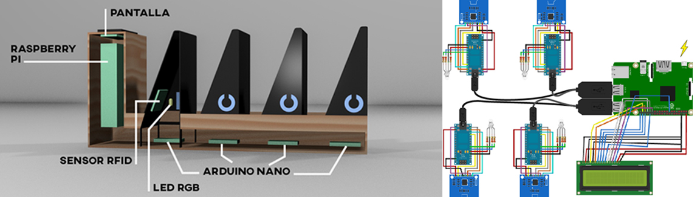

Drop

Context:
Advanced Multimedia production (4th grade)
Technologies:
Raspberry, Arduino, Python, RFID, Android App, 3D printing
Description:
Drop is the name of the product developed in this project which was carried out by a team of 5 people distributed by roles. The mission was to desing and prototype an electronic product which could be commercialized and my role was as hardware manager, so I had the task to choose the electronic components, design the inner structure and assemble everything for the final prototype.
The final product consisted of some compartments where you could leave your mobile phone when you were in a bar or restaurant. By leaving the phone there, Drop would detect the presence or absence of the phone and would score the users according to how much they had left the phone there. In this way, it would be possible to gammify and reward the mobile phone being left in a social environment. The final product is accompanied by an application designed by the team that allows the owners of the stores to manage the points of the users.
The development of this project allowed me to put into practice several technologies studied during my career, such as Android programming and communication between sockets and devices. But it also allowed me to practice self-learning for the use of unstudied technologies, such as the use of Raspberry and Arduino, RFID sensors or 3D printing.